Middlesbrough Council: giving a town-wide trauma-informed schools programme its voice
PROCLAIM is Middlesbrough Virtual School’s ambition for every school in the town to be attachment aware and trauma informed. We were brought in to give it reach: the communications, the training platform, the films, and a way for young people to shape it.

The starting point
PROCLAIM (Providing Rich Opportunities to Children who are Looked After In Middlesbrough) is Middlesbrough Virtual School’s programme to make every school in the town attachment aware and trauma informed. The ambition needed reach across schools, families and council staff alike, and a way to bring young people into a programme built for them.
What we did
- StrategyA signed-off communications strategyCovering 2023 to 2025, agreed with the Virtual School in January 2024
- PlatformTraining content on The Care Leaders OnlineCourses with certificates of completion for CPD rolled out to schools and settings across the town
- FilmFive filmsA main promotional film plus shorter films for parents, students, teachers and council staff
- Youth voiceA youth forum briefA co-produced forum design with young inspectors, to bring pupil voice into how the programme runs
- Development dayA facilitated sessionIn-person, December 2024, delivering the Four Ages Framework to the programme’s leaders
How we worked
Story
Every training session and film opened with real experience of what attachment and trauma mean for a child in care, not an abstract policy framing.
Theory
The evidence behind attachment-aware, trauma-informed practice, translated for teachers and support staff rather than specialists.
Tools
CPD schools and settings could complete in their own time, plus films short enough to use in a staff meeting or send to parents directly.
What changed
427 staff on the platform, 128 certificates.
And a town-wide programme that reported 33.6% fewer suspension episodes in its schools.
427 staff signed up to the training platform and 128 CPD certificates were issued, with course ratings between 4.14 and 4.75 out of 5. Five films were produced and edited: a main promotional film and shorter versions for parents, students, teachers and council staff. PROCLAIM’s own programme data reported 33.6% fewer suspension episodes across PROCLAIM schools compared with non-PROCLAIM schools, and 150.5 fewer days lost to suspension per pupil.
See the work
Open any piece to look through it page by page.
The Four Ages Framework
One young person, four ages. Choose one.
The Four Ages
How old they are. The only age that can be measured exactly.
Where they are in their learning, shaped by missed school, school moves, support at home and what teachers expect.
What life has already asked of them. Experiences can be reframed as strengths.
How they recognise and manage feelings: taking responsibility, owning mistakes, asking for what they need.
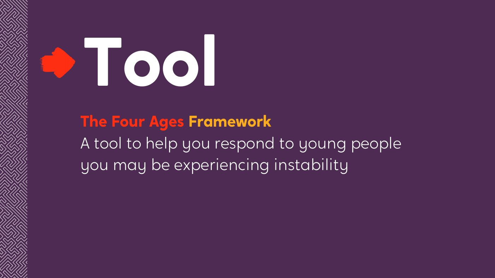
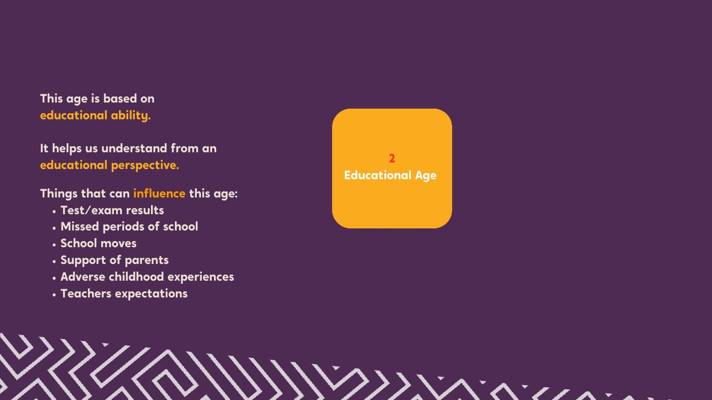
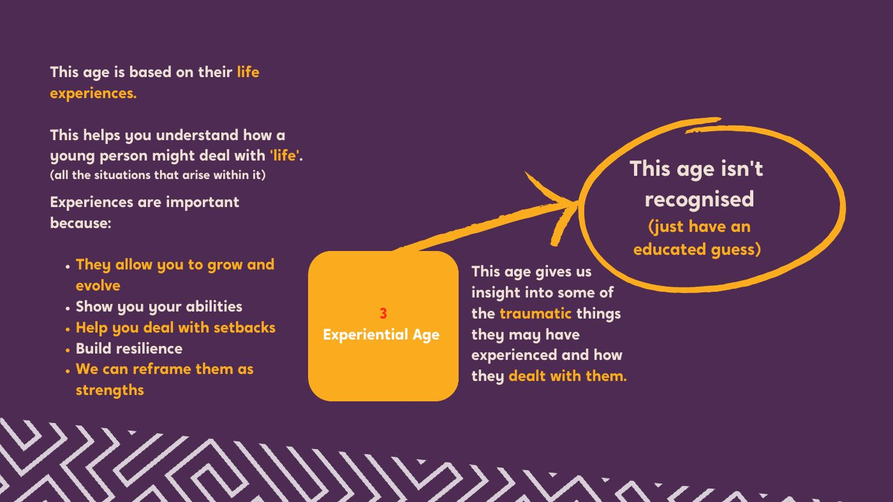
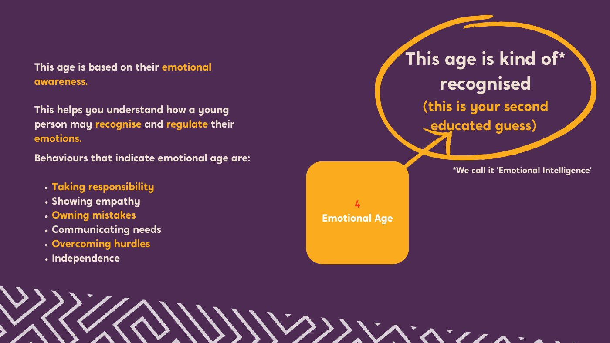
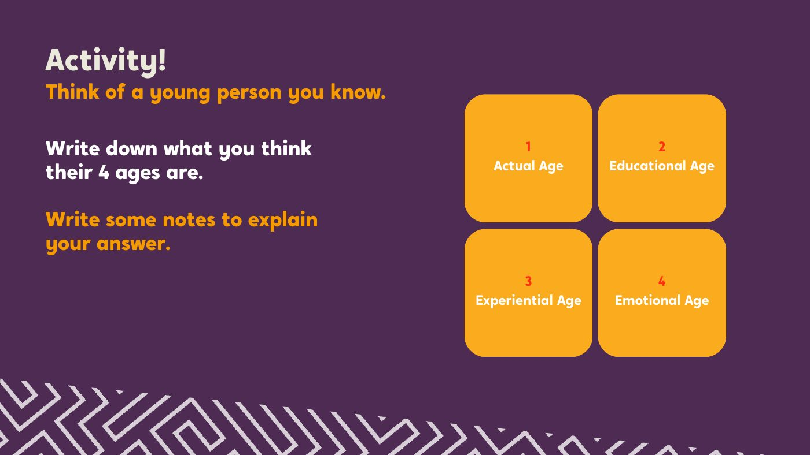
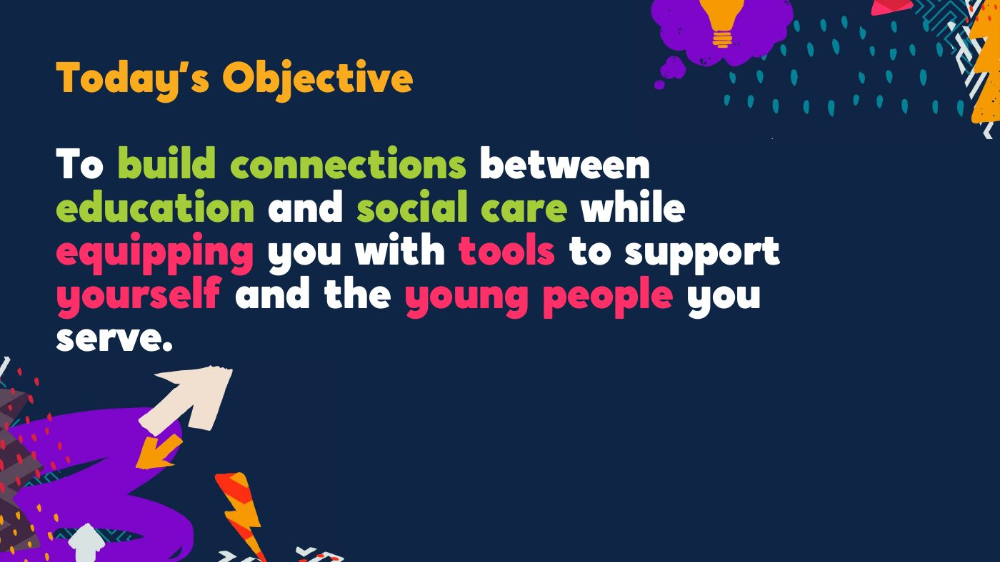
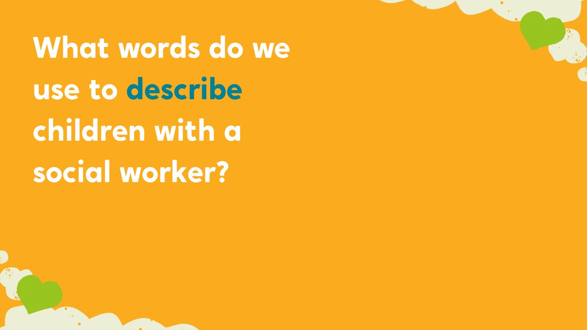
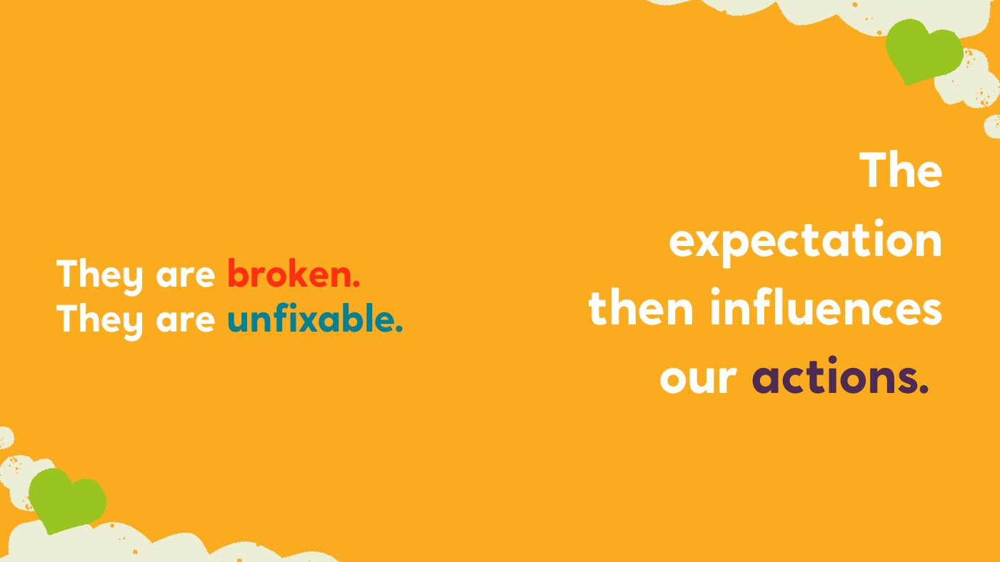
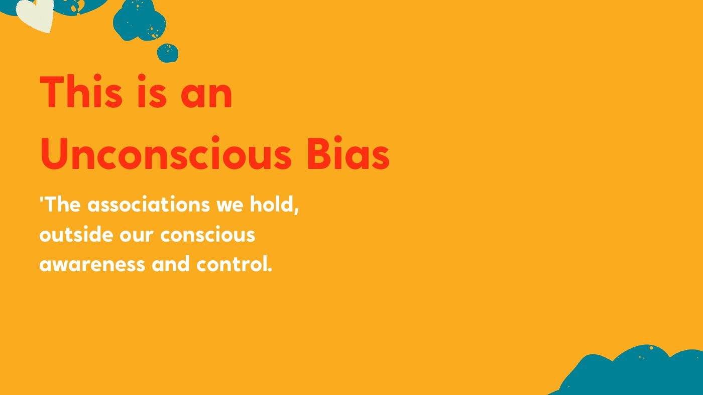
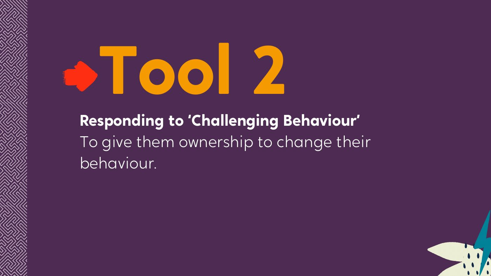
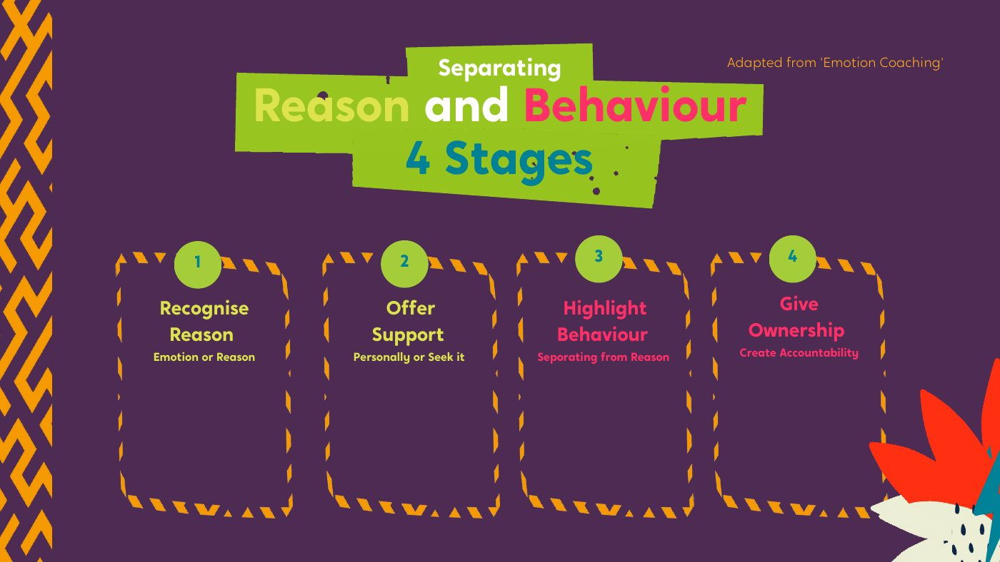
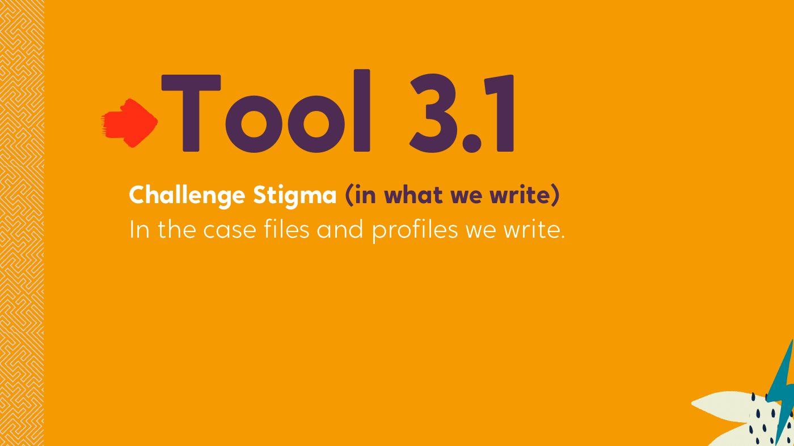
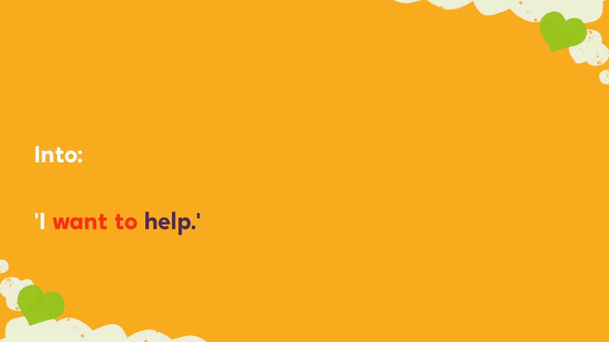
Three years for every school
- Year 1: develop A supported school audit, a development plan, whole-school training, joining the network and starting supervision
- Year 2: implement Termly reviews of the plan, working with the network, continued supervision
- Year 3: collaborate An independent audit, a self-governing plan, and sharing learning at the PROCLAIM conference
Each school has two project leads, one of them the headteacher.
Communicate PROCLAIM
- Awareness Raise the profile of PROCLAIM across the town
- Recruitment Bring in the 2024/25 cohort of schools
- Network Comms and support for network meetings
- Media A brochure, newsletter series, poster series, podcast content and social media
Five films
A main promotional film, plus shorter versions for parents, pupils, teachers and council staff.
A forum young people own
- Apply, not selected Young people apply, so they choose to be there
- Two from each school A board of representatives across PROCLAIM schools
- Theirs to shape They name it, brand it and write its terms of reference
Young inspectors
Young people inspect PROCLAIM schools against the audit, plus something they choose to look at.
- Co-designed An inspection framework built in a workshop with them
- Trained Bespoke training in research and inspection skills
- Heard A report back to senior leaders
A brief with boundaries
- Graffiti wall A budget, a college student to work with, one theme, and a grand opening
- Training videos Three videos for teachers, no more than three minutes each, launched in an assembly
One creative project a year, chosen by the forum, inside a clear brief.
The training platform
What PROCLAIM’s own data showed
The programme’s own figures, comparing PROCLAIM schools with non-PROCLAIM schools.